Hello and welcome to the Nintendo Console Chronology! This page is dedicated to those who want to learn more about their favorite Nintendo systems, as well as for those who want to delve into the world of Nintendo throughout the decades! Thank you for visiting, and I hope you learn something new!
The Nintendo company itself was actually found all the way back on September 23, 1889! They started originally by selling cards that had beautiful art printed on them, and they were called Hanafuda cards, which is translated to "flower cards". Later on, in the 1960's and 70's, Nintendo became a toy company, producing and selling toys in the Japanese market. They even dipped their toes into the video game market in the late 70's and early 80's by making a couple arcade games as well as pong consoles. The first "video game" product that made it to the American market was a series of little handheld systems called the "Game and Watch". Over here, they were actually rebranded as "Time Out", but they were the same games and same hardware.
This all changed in 1981, when the father of Super Mario himself, Shigeru Miyamoto, created the hit arcade classic "Donkey Kong". It was a smash success, and the Nintendo company decided to shift their focus into video game production. Since then, the rest is history. Nintendo today is one of the biggest contenders in the development of video game hardware and software, and are one of the most recognizable properties on the planet.
Released: October 18, 1985
Lifetime Sales Worldwide: 61.91 million units
Discontinued: 1995
The NES was a breakthrough system in the video game market. Following the video game crash of 1983, when system like the Atari 2600 was oversaturating the market with pretty lackluster games, most of the video game market dwindled, and home consoles were considered a fad while arcades were the better experience. However, Nintendo came to the burning building that was the video game market and quenched the flames with the release of the NES. They initially marketed the system as more of a digital interactive toy rather than a game system, using a product called R.O.B. the Robot. He was used as a peripheral that you would prop up and watch the TV screen with you and play co-op games with you. The first system release included the NES system, two controllers, R.O.B. and his accessories, a Nintendo Zapper(©), and two games: Gyromite, and Duck Hunt. Later on, however, after the initial release brought lots of interest to the console, Nintendo switched out R.O.B. and replaced his game of gyromite with the real console seller: Super Mario Bros.
Released: April 21, 1989
Lifetime Sales Worldwide: 118.69 million units
Discontinued: 2003
After the success of the NES, Nintendo decided to create their classic GameBoy. They decided to build off of their popularity of their Game and Watch systems, while also incorporating the versatility of a cartridge-based system, allowing for one machine to play as many games as the owner wanted. The GameBoy released in the late 80's with much success. It ran on four AA batteries, had no color, no backlit screen (doesn't illuminate itself in the dark), Its competitors, the Sega Game Gear and the Atari Lynx offered backlit displays and full color, but what they had in visual quality, they lacked in software and battery life. Probably the biggest factor of the GameBoy's success was the launch title that was packaged with every system: Tetris. Tetris and the GameBoy are like peanut butter and jelly, they compliment each other so well, and with that, Nintendo's newest portable console set a high precedent for the future of the handheld gaming market.
After the success of the NES, Nintendo decided to release a successor to the system, and they called it the Super Nintendo Entertainment System. The SNES was a 16-bit system that was released in 1991, and it was a huge success. It had a library of games that were some of the best of all time, including Super Mario World, The Legend of Zelda: A Link to the Past, and Donkey Kong Country. The SNES was also known for its Mode 7 graphics, which allowed for 3D-like effects in games.
Now, this system is probably Nintendo's least known console, and for good reason. This system had a lot of cut corners during development, a console that was definitely ahead of its time. As the name implies, the Virtual Boy was a sort of virtual reality console (virtual reality being used very loosely here), that Nintendo tried to get out of the door to tide over consumers who were waiting for the Nintendo 64 to be released. However, it just did not live up to expectations, and only a year later, was discontinued from sale.
The Nintendo 64 was released in 1996, and it was a huge leap forward in terms of graphics and gameplay. It was the first console to use 3D graphics, not to mention it has some of the greatest games of all time. However, this was the first console that
For some odd reason, Nintendo considers this to be just an upgraded GameBoy, It was the first handheld console to use color graphics, and it had a library of games that included some of the best of all time, including The Legend of Zelda: Link's Awakening DX, Pokémon Gold and Silver, and Super Mario Deluxe. The GameBoy Color was also known for its backward compatibility with the original GameBoy games.
The Nintendo GameBoy Advance was an amazing handheld system. It released a few months before Nintendo's next home console, and it was their most impressive and powerful handheld yet. It was backwards compatible with GameBoy and GameBoy Color games, meaning it was capable of playing those older games. It still didn't have
The Nintendo GameCube was released in 2001, and it was a huge departure from the previous consoles. It was a small, cube-shaped console that used mini-DVDs for its games. The GameCube had a library of games that included some of the best of all time, including Super Smash Bros. Melee, The Legend of Zelda: The Wind Waker, and Metroid Prime. The GameCube was also known for its four controller ports, which allowed for multiplayer gaming.
The Nintendo GameBoy Advance SP was released in 2003, and it was a huge leap forward in terms of handheld gaming. It was the first handheld console to use a clamshell design, which allowed for a more compact design. It also was Nintendo's first console released in North America that had a backlit display. The GBA SP had a library of games that included some of the best of all time, including The Legend of Zelda: The Minish Cap, Pokémon Ruby and Sapphire, and Metroid Fusion. The GBA SP was also known for its backlit screen, which allowed for gaming in the dark.
The Nintendo DS was released in 2004, and it was a huge leap forward in terms of handheld gaming. It was the first handheld console to use two screens, one of which was a touchscreen. The DS had a library of games that included some of the best of all time, including New Super Mario Bros., The Legend of Zelda: Phantom Hourglass, and Animal Crossing: Wild World. The DS was also known for its Wi-Fi capabilities, which allowed for online gaming.
The Nintendo Wii was released in 2006, and it was a huge departure from the previous consoles. It was a motion-controlled console that used a unique controller called the Wii Remote. The Wii had a library of games that included some of the best of all time, including Super Mario Galaxy, The Legend of Zelda: Twilight Princess, and Wii Sports. The Wii was also known for its online capabilities, which allowed for online gaming.
The Nintendo 3DS was released in 2011, and it was a huge leap forward in terms of handheld gaming. It was the first handheld console to use 3D graphics without glasses. The 3DS had a library of games that included some of the best of all time, including Super Mario 3D Land, The Legend of Zelda: Ocarina of Time 3D, and Animal Crossing: New Leaf. The 3DS was also known for its online capabilities, which allowed for online gaming.
The Nintendo Wii U was released in 2012, and it was a huge departure from the previous consoles. It was a console that used a unique controller called the Wii U GamePad, which had a touchscreen. The Wii U had a library of games that included some of the best of all time, including Super Mario 3D World, The Legend of Zelda: Wind Waker HD, and Splatoon. The Wii U was also known for its online capabilities, which allowed for online gaming.
The Nintendo Switch was released in 2017, and it was a huge leap forward in terms of gaming. It was a hybrid console that could be used as both a home console and a handheld console. The Switch had a library of games that included some of the best of all time, including The Legend of Zelda: Breath of the Wild, Super Mario Odyssey, and Animal Crossing: New Horizons. The Switch was also known for its online capabilities, which allowed for online gaming.


 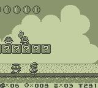
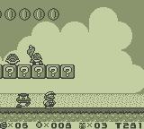
 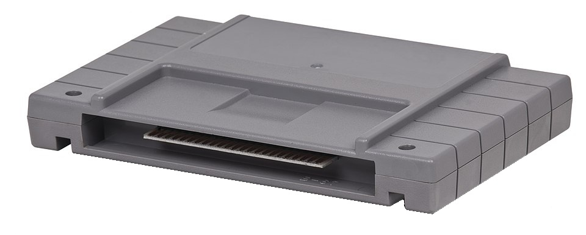
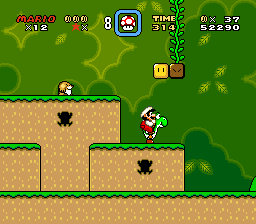
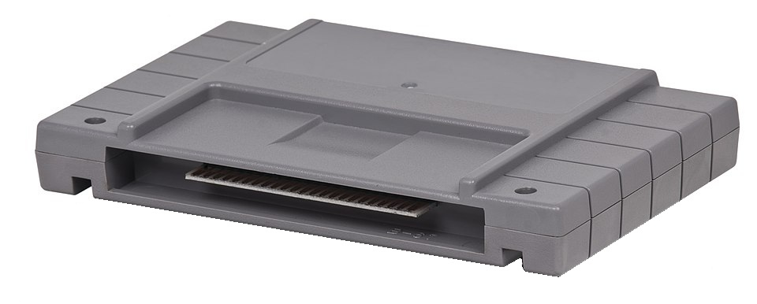
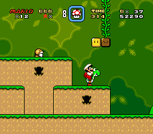
 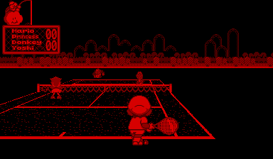
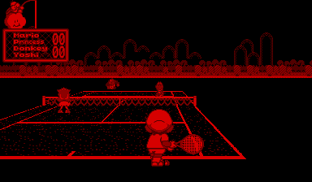


 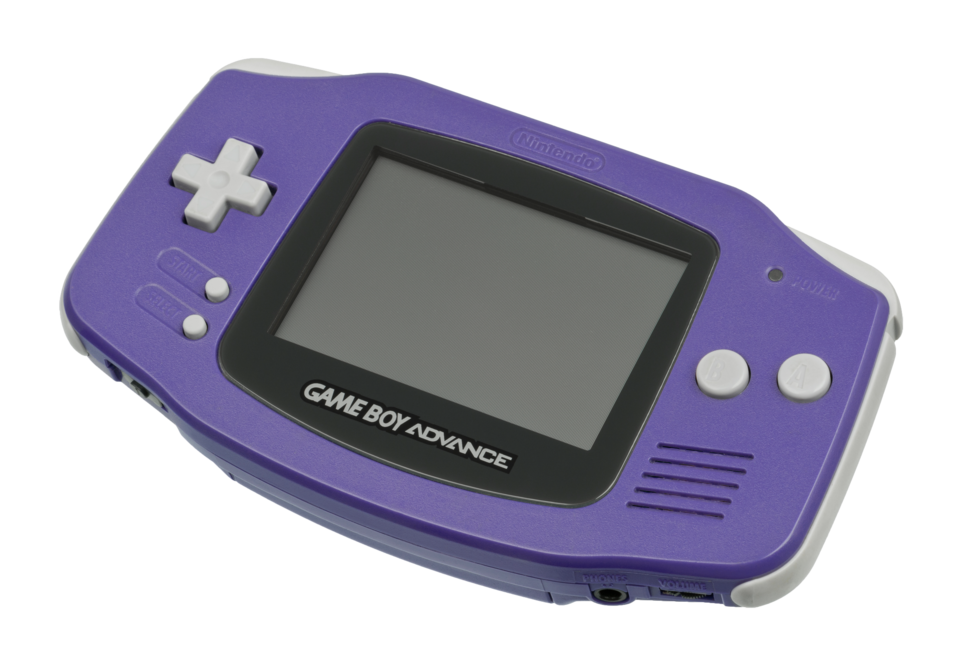
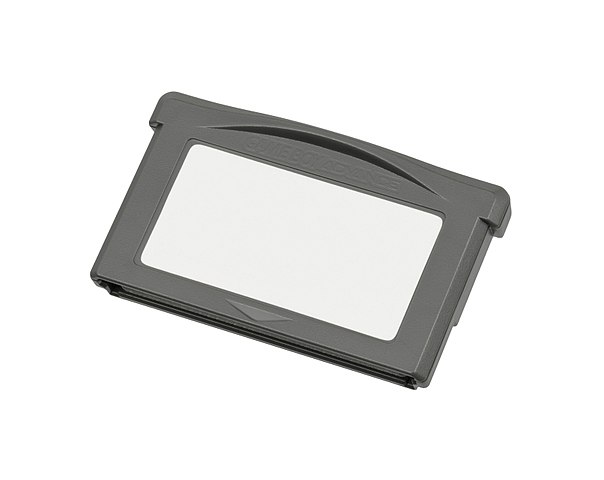
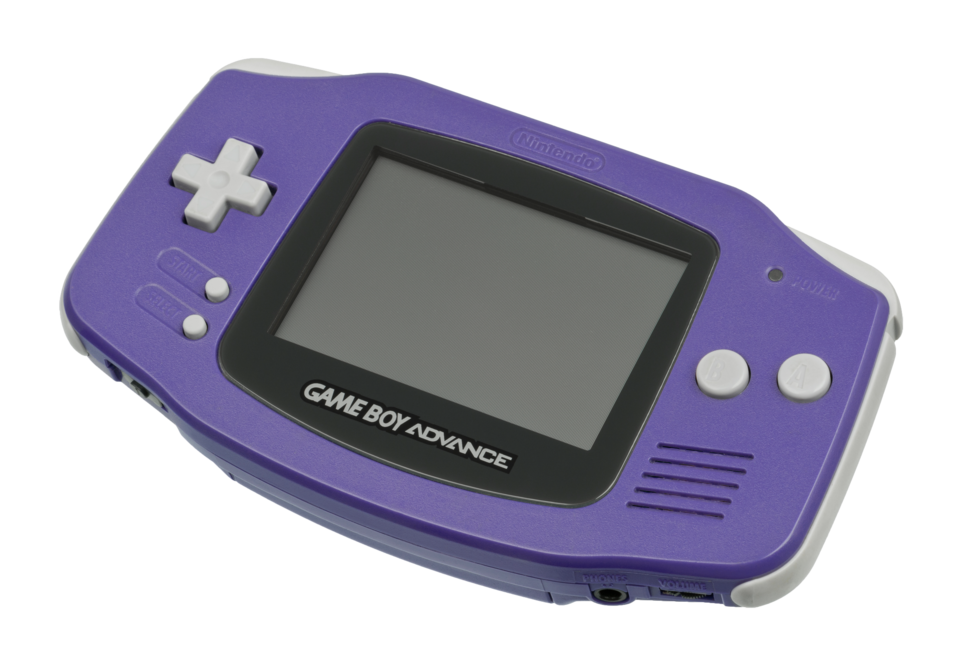
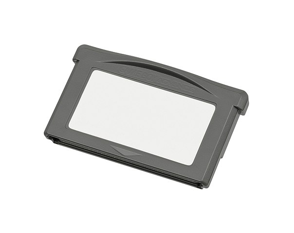


 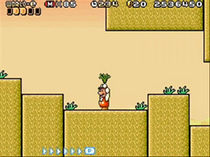
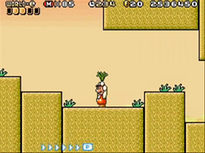
 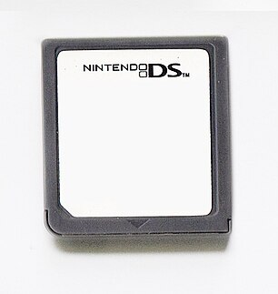
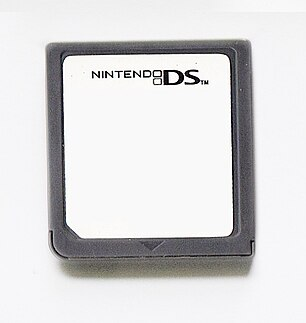
 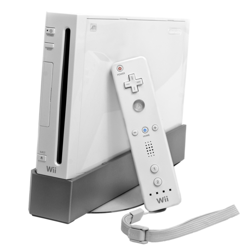
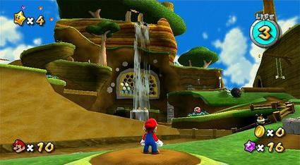
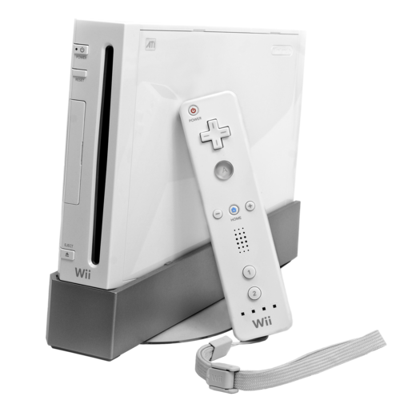
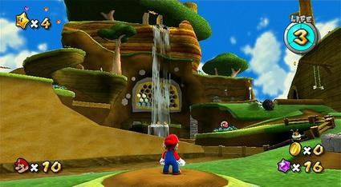


 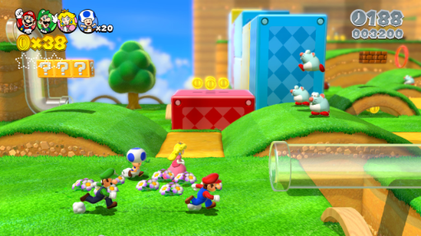
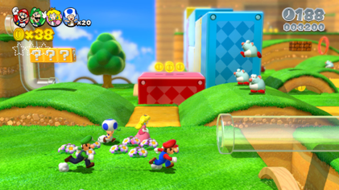
 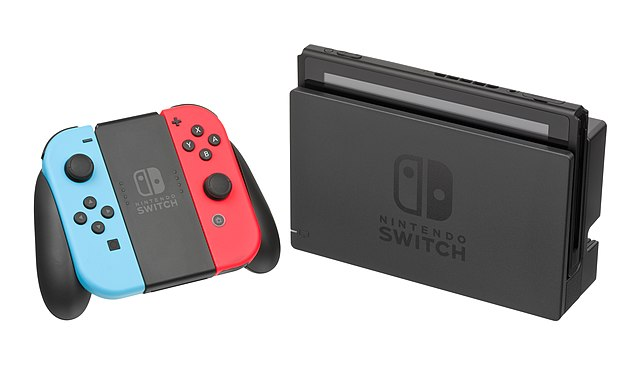
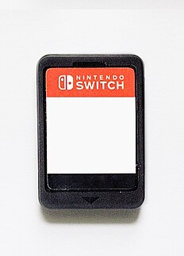
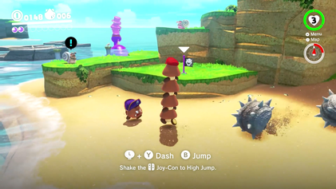
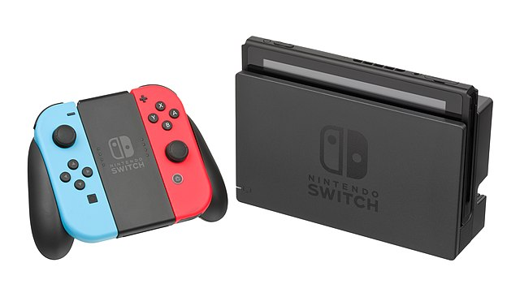
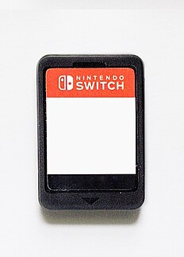
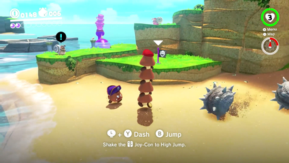
I will have a subpage that is dedicated to the sales of each console. I will have a chart that shows the sales of each console, and I will give a few signs to watch for if a console is performing well in the market, or if there are cracks to watch for to see if it is going under. I will also have a little splurge about Nintendo's ingenuity and how the company's innovations make it a powerhouse in the video game space.
Nintendo has always been a company that has pushed the boundaries of gaming. From the introduction of the D-pad on the NES controller to the motion controls of the Wii, Nintendo has always been at the forefront of innovation in gaming. The company has a long history of creating unique and innovative hardware that has changed the way we play games. Nintendo's ingenuity is what sets it apart from its competitors, and it is what has made it one of the most successful companies in the gaming industry.
Nintendo's innovation is not just limited to hardware, however. The company has also been a pioneer in software development, creating some of the most beloved and iconic games of all time. From Super Mario Bros. to The Legend of Zelda, Nintendo has created a library of games that have defined the gaming industry. The company's commitment to quality and innovation is what has made it a leader in the gaming industry, and it is what will continue to drive its success in the future.
Positive Publicity: If a console is getting a lot of positive publicity, it is likely doing well in the market. This can include reviews from gaming websites, social media buzz, and word-of-mouth recommendations from friends and family.
Sales Numbers: If a console is selling well, it is likely doing well in the market. This can include sales numbers from retailers, as well as sales numbers from the manufacturer.
3rd Party Support: If a console is getting a lot of support from 3rd party developers, it is likely doing well in the market. This can include announcements of new games, as well as partnerships with other companies.
Console Variants: If a console is getting a lot of variants, mostly cosmetic changes that don't give any advantage over the base product, it is likely doing well in the market. This can include special editions, limited editions, and bundles with other products.
Shovelware: If a console is receiving a significant amount of shovelware, it may indicate strong market performance. Shovelware refers to games that are often low-quality or quickly produced to capitalize on a console's popularity. While these games may not be critically acclaimed, their presence can signal that developers see the console as a lucrative platform due to its widespread adoption and booming sales.


This subpage will cover a few of Nintendo's biggest flops, and I will give a little bit of history about each console, and what went wrong with it. I will give 3 examples of Nintendo's biggest failures, and write a few reasons as to why the console failed in the long run.
Nintendo isn't a flawless company. Everyone makes mistakes and missteps. Nintendo is no different. In the course of trying something new, unforseen shortcomings and poor execution will always bring a product short of what it was projected to be. On this page, I will list three of (what I consider to be) the most significant flops that most may or may not know about.
This may go without saying, but inventing something new and trying out new things even if they might not be the best idea is still a sign of a healthy mindset and strong company. Sure, it would be great to bring about innovative things like the Wii Remote every couple of years, but the fact that Nintendo had the willingness to try and not suffer completely from the losses shows that they have faith in their research and development departments and has a forward thinking company mindset.
An attempt was made at VR in 1995... the more development that went into it, the quicker Nintendo realized that this was going to be expensive to produce, so some features had some corners cut.
It was a 3D system that was supposed to be a VR system, but it was just a red and black screen with no color. People were also concerned about motion sickness and epileptic triggers due to long play times.
It was a huge failure, and it was discontinued after only a year on the market.
The Nintendo 64 was a huge leap forward in terms of graphics and gameplay, but it was also a huge disappointment. The system was plagued by delays, and when it finally released, it was missing a lot of the features that were promised. The system also had a very limited library of games, which made it difficult for gamers to find something to play.
The Nintendo 64 was also very expensive, which made it difficult for gamers to justify the purchase. The system was also very difficult to develop for, which made it difficult for developers to create games for the system. The Nintendo 64 was a huge disappointment, and it was a huge failure for Nintendo.
The Wii U is probably Nintendo's most significant failure. It's considered to be a super safe and lazy follow up to the Wii, capitalizing off of its popularity.
The marketing and reveal was considered confusing and misleading, since many of the advertisements shown only the Wii U Gamepad, a lot of people considered that it was just a peripheral that you bought for your Wii.
People didn't see much value in getting the Wii U since the Wii in the later years didn't maintain its initial luster that it had at launch. The Wii U was marketed towards EVERYONE, since the Wii appealed to people who didn't consider themselves to be serious gamers. Nintendo throughout the Wii U's lifespan just couldn't ever decide to make it appeal more to the hardcore gamers or to the general public.